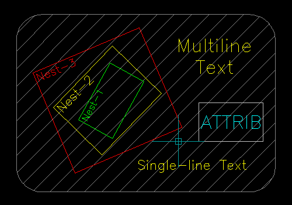

Show Hatch Text
This page is delivered for consistency purposes only, as part of the LeeMac sample module of DynALisp, which shows how DynALisp turns existing AutoLISP programs into a module. The program and its description are the work of Lee Mac, who keeps all the credit for them. The original page, with the latest version, is on Lee Mac's website: https://lee-mac.com/showhatchtext.html
| Function Syntax | LM-ShowHatchText – original syntax: sht (see aliases) |
| Current Version | 1.0 |
| Compatible with AutoCAD for Mac? | No |
| Compatible with AutoCAD LT? | Yes |
| Original Page | lee-mac.com/showhatchtext.html |
Program Description
This program enables the user to clear the area of a hatch pattern surrounding selected single-line text (DText) and multiline text (MText) objects, or Text, MText and single-line & multiline attributes contained within selected primary & nested block references.
Upon issuing the command syntax sht (Show Hatch Text) at the AutoCAD command-line, the user is first prompted to make a selection of Text, MText and/or block references for which to clear the surrounding hatch pattern, and then to select the obscuring hatch to be modified.
Following valid selections, the program will proceed to generate new hatch boundaries surrounding every selected Text and MText object, and furthermore for every Text, MText or attribute object found within each selected block reference, and recursively any of these annotation objects encountered within any nested block references (nested to any depth).
In order to generate the appropriate hatch boundary for nested Text, MText or attributes, the program will recreate the nested object as a temporary primary object, before adding the new hatch boundary and finally deleting the temporary object. As a consequence of this method, the hatch must become disassociative when nested objects are processed by the program.
Finally, the program is compatible for use with Text, MText and single-line & multiline attributes as primary objects in the drawing, or found within standard or dynamic primary & nested block references; furthermore, these objects may be defined in any UCS construction plane.
Program Demonstration

In the above demonstration, the program is being used with multiline text (MText), single-line text (DText), an attributed block reference, and a block reference containing multiple nested block references with single-line text.
The red block reference on the left has been rotated & scaled, and contains the nested yellow block reference which has also been rotated & scaled; this yellow block reference in turn contains the nested green block reference which has been rotated & scaled, forming a compound scaling & rotation as we traverse up the levels of nesting.
Bundled program notes
;;-----------------------=={ Show Hatch Text }==------------------------;;
;; ;;
;; This program enables the user to clear the area of a hatch pattern ;;
;; surrounding selected Text or MText objects, or Text, MText or ;;
;; Attributes contained within selected Block References. ;;
;; ;;
;; Upon issuing the command syntax 'sht' (Show Hatch Text) at the ;;
;; command-line, the user is first prompted to make a selection of ;;
;; Text, MText and/or Blocks for which to clear the surrounding hatch ;;
;; pattern, and then to select the obscuring hatch to be modified. ;;
;; ;;
;; Following valid selections, the program will proceed to generate ;;
;; new hatch boundaries surrounding every selected Text and MText ;;
;; object, and furthermore for every Text, MText or Attribute object ;;
;; found within each selected block reference, including within any ;;
;; nested block references (nested to any depth) found within the ;;
;; selected block references. ;;
;; ;;
;; In order to generate the appropriate hatch boundary for nested ;;
;; Text, MText or Attributes, the program will recreate the nested ;;
;; object as a temporary primary object, before adding the new hatch ;;
;; boundary and deleting the temporary object. As a consequence of ;;
;; this method, the hatch must become disassociative when nested ;;
;; objects are processed by the program. ;;
;; ;;
;;----------------------------------------------------------------------;;
;; Author: Lee Mac, Copyright © 2013 - www.lee-mac.com ;;
;;----------------------------------------------------------------------;;
;; Version 1.0 - 14-11-2013 ;;
;; ;;
;; First release. ;;
;;----------------------------------------------------------------------;;
Command Names And Aliases
As in every DynALisp module, each program of this sample module has one main command, named LM-*, and the original command names of Lee Mac's page are kept as its aliases: they run the same command, and can be added, renamed or removed in Dyl-Suite (saved in Resources\Aliases.csv).
| Command | Aliases | Name |
|---|---|---|
| LM-ShowHatchText | SHT | Show Hatch Text |